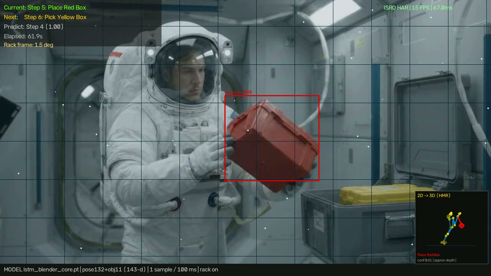

Technical Approach · System Architecture
Astronaut Activity Recognition (HAR) for the 8-step BAS protocol · SIH 2026 · PS 26174
Runs fully offline on one laptop (RTX 3050)
14–16 FPS live, about 70 ms per frame
14–16 FPS live, about 70 ms per frame
Capture
Rack cameraUSB webcam or phone, any fps
Frame samplerfixed 100 ms tick, independent of camera fps
2Upright view + rack framebody rotated upright before pose; joints measured from the rack, not the lens
ArUco markersoptional, fixes the rack pose
Vision (3 models, run together)
A · objects
YOLOYOLOv8n box detectorred box · yellow box · main box, with position and size
B · 2D pose
MediaPipe Pose33 body landmarks (x, y, z, visibility)
C · 3D pose (HMR), our own model
Trackbody box
Crop + rotate224², upright
3HMR3DNetMobileNetV3-S
3D joints33 × xyz

Live output of branch C.
3D skeleton at a fixed viewing angle; the box the task needs is drawn and linked to the nearest hand.
Trained on rendered suited astronauts, where pretrained HMR models fail.
3D skeleton at a fixed viewing angle; the box the task needs is drawn and linked to the nearest hand.
Trained on rendered suited astronauts, where pretrained HMR models fail.
Temporal model
Fusion gateuses 3D joints when HMR is confident, 2D otherwise; adds the boxes
143-d feature vectorone per 100 ms tick
Sliding windowlast 3 s = 30 ticks
BiLSTM, 3 layers × 256+ attention, 8 step classes
5Entropy gatepass only if conf ≥ 0.65 and entropy ≤ 1.4 nats
Protocol engine
protocol.json8 steps, required objects
Confirm stepsame step for 5 ticks in a row
Advance + suggest next“Step 3 complete. Step 4: examine red box.”
Order checkskipped, out of order, repeated
HOLD + recoverwarns, waits for the missed step, then loops back
4Contract guardrefuses a model trained on other features
Outputs
Voice alertsoffline text-to-speech
DashboardPyQt6 HUD + 3D panel

Event logJSONL + TXT
UDP streamlive feed to ground
MP4 recordingwith overlay
Offline training · weights frozen for deployment
1

Blender digital twinrack, boxes and suited astronaut at 0–180° roll, pitch, failed lights. Joints and step labels come free from the render.
33 takes · 31,891 frames
33 takes · 31,891 frames
Real / AI-generated clipsstep spans labelled by hand; closes the synthetic-to-real gap
Sequence builderruns the same feature code as the live loop, so training input = live input
Train, split by take (never by frame)
YOLOYOLOv8n boxes: mAP@50 0.934
HMR3DNet: supervised by Blender 3D joints
BiLSTM: 30 × 143 windows, 8 classes
promote_modelchecks feature layout, sample clock and detector match the runtime, then exports
.pt / .onnx
Problem statement → our answer
| Recognise each step | BiLSTM over 3 s of pose and object features |
| Suggest the next step | protocol engine reads protocol.json and speaks step N+1 |
| Catch skipped / out-of-order steps | order check, then HOLD until the missed step is done |
| Voice alerts | offline TTS, only after the entropy gate |
| Log and live stream | JSONL + TXT log, UDP stream, MP4 |
| Microgravity, suited crew | upright view, rack frame and HMR3DNet handle any body roll |
| Offline, on board | one RTX 3050 laptop, no network calls |
Measured on held-out takes
| Box detector | YOLOv8n, mAP@50 | 0.934 |
| 3D pose, 60° roll | pretrained HMR → ours | 0.00 → 0.77 |
| 3D pose, inverted | pretrained HMR → ours | 0.60 → 0.91 |
| Step classifier | unseen takes | 73% |
| Live speed | RTX 3050, end to end | 14–16 FPS |
Exactly 90° edge-on is still weak (0.07); the fusion gate falls back to 2D there.
What is new in our approach
1Digital-twin training data. 31,891 labelled frames with no hand annotation.
2Orientation-proof input. Upright view + rack frame, so a floating crew looks the same.
3Own 3D pose model for spacesuits, trained on rendered ground truth.
4Train = serve contract. A mismatched model is refused at load time.
5Confidence-gated alerts. Speaks only when the model is sure.
Tech stack:
PythonPyTorchOpenCVMediaPipe
YOLOUltralyticsBlenderONNXPyQt6
FFmpegNumPyCUDApytest (56 tests)
data flowtrained weights / contractnour innovation